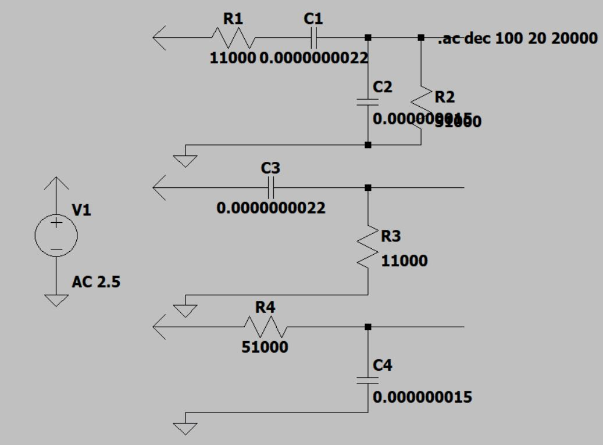
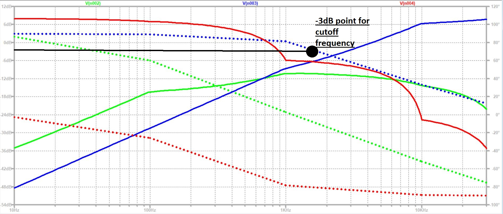
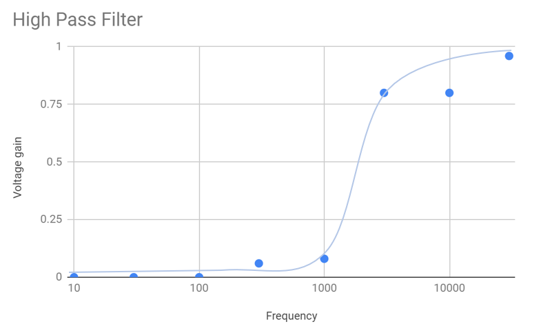
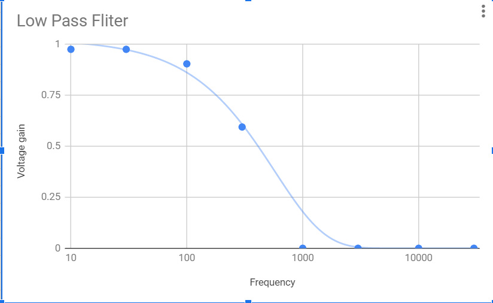
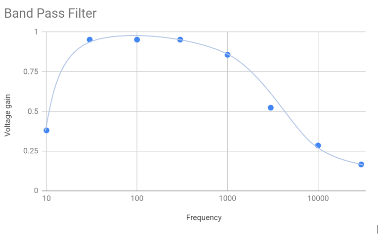
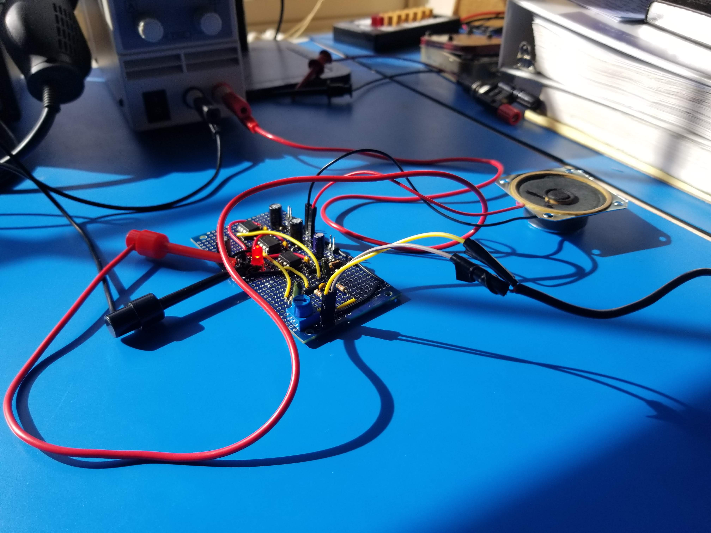

This project is the result of a group project between Kevin Chau, Ichen Lee and myself for Oregon State University's ENGR 202:
Electrical Fundamentals Laboratory assignment.
The goals of this Audio Amplifier project was to create a sound system with a tweeter, mid-range, and sub-woofer
hooked up to a low-pass filter, band-pass filter, and high-pass filter respectively. The system has
a 6.25mm TS connector for the audio signal input and is powered by a 12V power supply. There is also a LED on
the power input to indicate on/off and a potentiometer on the audio input to change the volume.
The project has relevance to the frequency response of the filters for sorting out specific audio frequencies to speakers that have different specifications.
When going into design, resistor values were selected first. The relatively high resistor values of 11kohm and 51kohm
were chosen so that the current draw from the computer audio input would not be too high. The capacitor values were
found based on the cutoff frequencies and were near standard ceramic values.
We determined the values for our filters using the process below:
For the low-pass filter(cutoff frequency of 200Hz):
$$f_{c} = \frac{1}{2\pi*R*C} Hz$$
Assuming a 51kohm resistor for the value of the resistor the capacitor value can be found with the equation.
$$200 = \frac{1}{2\pi*51000*C}$$ $$C = 15.603*10^{-9} F$$
Which is close enough in specifications to a more common 15nF capacitor.
So the final values for this filter will be R = 51kohm and C = 15nF
For the high-pass filter(cutoff frequency of 6KHz):
$$f_{c} = \frac{1}{2\pi*R*C} Hz$$
Assuming a 11kohm resistor for the value of the resistor the capacitor value can be found with the equation.
$$6000 = \frac{1}{2\pi*11000*C}$$ $$C = 2.4*10^{-9} F$$
Which is close enough in specifications to a more common 2.2nF capacitor.
So the final values for this filter will be R = 11kohm and C = 2.2nF
For the band-pass filter(cutoff frequency of 200Hz and 6KHz):
The values of the band-pass filter were determined by combining the high and low-pass filters in the same circuit
(See schematic) so the calculations were the same.
So the final values for this filter will be R = 51kohm and C = 15nF for the low-pass section and
R = 11kohm and C = 2.2nF for the high-pass section.
The schematic diagram that was built in LTSpice is shown below. The schematic will model our low-pass, high-pass and band-pass filters.
The frequency response waveform from the three figures are below. Green is from the band-pass filter. Blue is from the high-pass filter. Red is from the low-pass filter.
The following graphs show the frequency response of the circuit based on chosen frequency values from 10Hz to 30kHz.
  This project resulted in a working cross-over filter design and was successful. The difficulties that came from this project were mostly in the form of soldering and signal noise reduction. There were issues with shorts occurring while soldering that complicated testing and noise issues were resolved with capacitors wired to ground on our signal. My project group completed the board, including power LED, external power supply, volume adjustment knob, main power switch, and did not use any inductors.
Here's the end product amplifier board, all hooked up for testing
